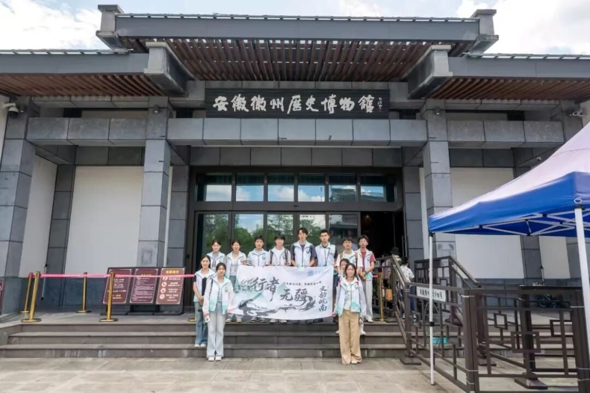
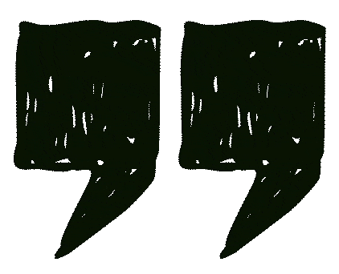
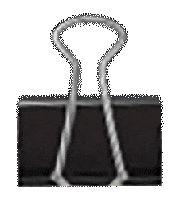
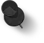
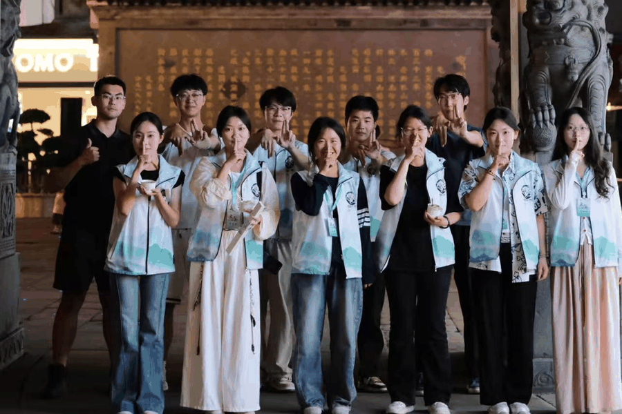
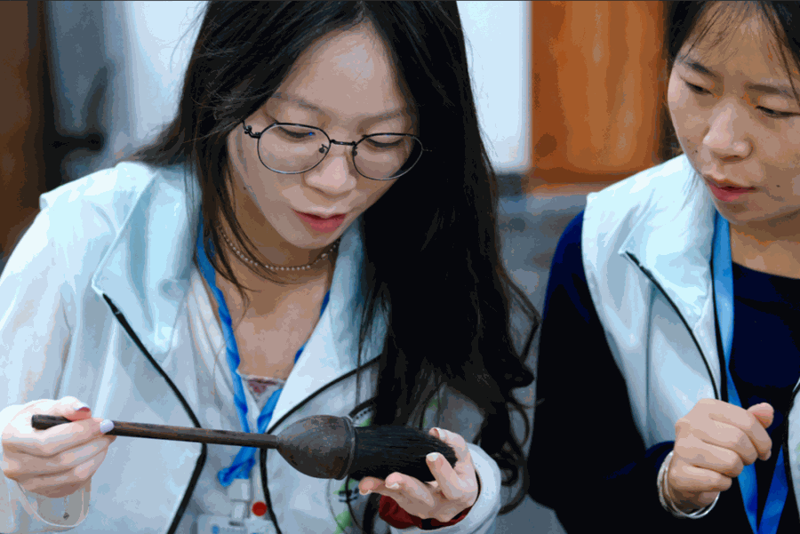
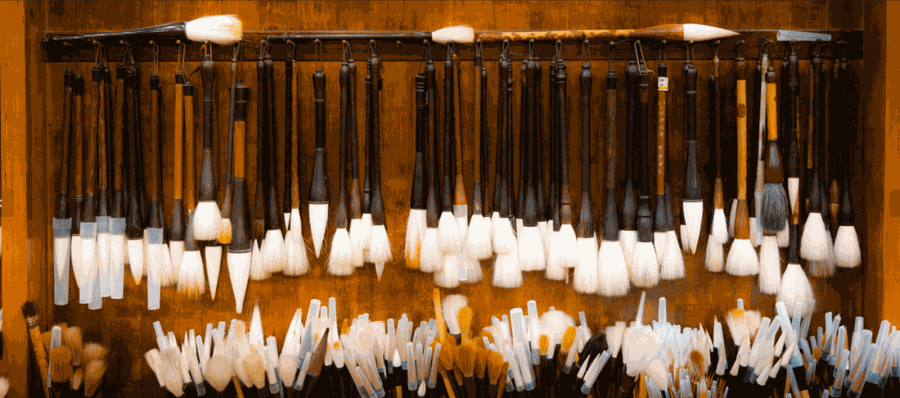
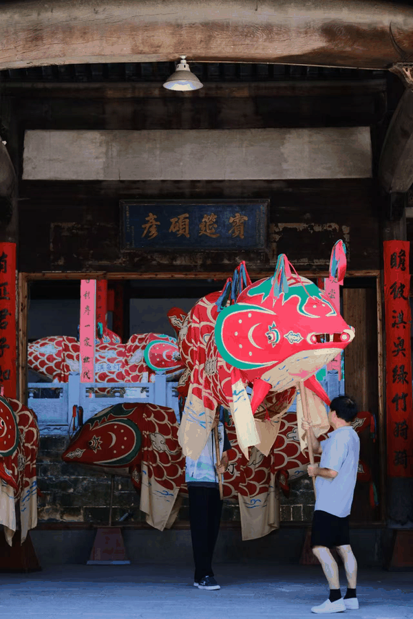
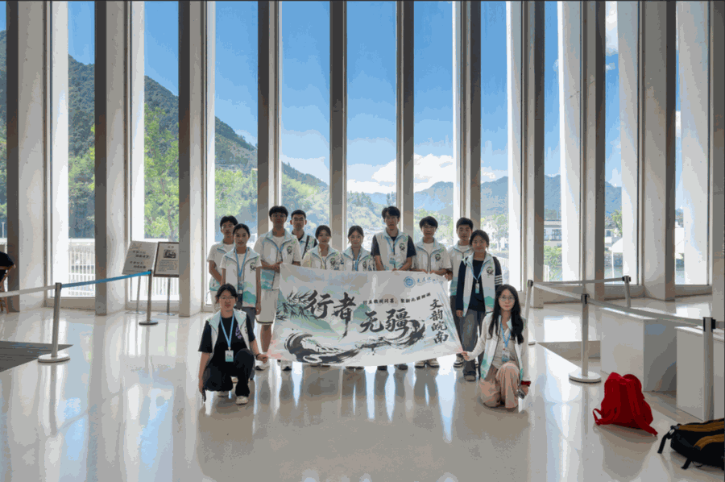

【行者无疆·文韵皖南】个人实践感悟——汪雨姗


故里寻徽韵
执心遇匠心
#一场与家乡非遗的深度重逢
XINGZHEWUJIANG
致第十八期行者无疆
XINGZHEWUJIANG

踏上黄山这片浸润千年文脉的土地，参加本次行者无疆社会实践，于我而言有着格外特别的意义。作为土生土长的本地人，我并非初次看见白墙黛瓦的古村落，可这一次，跟着团队的脚步，跳出日常的生活视角，走进博物馆、探访工坊，面对面和传承人对话，才真正沉下心读懂藏在家乡烟火之下的非遗力量。这趟旅程不再是走马观花的观光，而是一场与故土传统的深度重逢。

#行者无疆>>
一路走访，
我们穿梭于展馆与古旧工坊之间。
During our visits, we moved through exhibition halls
and vintage workshops.

#屯溪老街
在博物馆里，文物静静陈列，铺展开古徽州的宗族历史与商贸过往；在糕饼馆亲手制作黄山烧饼，面粉与馅料之间，触摸到非遗扎根市井的烟火气息；走进胡开文墨厂，墨香漫满整个厂区，繁复的捶墨、描金工序，让我们看见徽墨匠人日复一日的坚守。
#安徽徽州历史博物馆
在泾县宣纸文化园，有幸聆听大国工匠毛胜利老师分享，一张宣纸百道工序，数十年如一日的深耕，让我真切体会到何为大国匠心。石雕匠人在顽石之上因材施艺，一刀一凿赋予石材灵气，古法技艺的厚重扑面而来。
#行者无疆>>
诸多见闻都令人感慨，但此行最触动、
也最令我内心震撼的，还要属杨文笔庄的毛笔技艺，以及瞻淇的鱼灯民俗。
The brush-making craft at Yangwen Brush Workshop, as well as the fish-lantern folk custom in Zhanqi Village.


#杨文笔庄
杨文笔庄内，一支好毛笔的诞生远没有想象中简单。择料、梳毛、齐毫、装管，一道道细碎又严苛的工序，全部依靠手艺人的眼力与手感。没有捷径可以走，差一丝分寸，笔的聚锋、弹性便大打折扣。
工业化时代，机器可以快速批量产出笔杆，但毛笔笔头的灵魂，依旧离不开匠人双手的反复梳理与取舍。守一门手艺，便是守无数个枯燥重复的日夜。在快节奏的今天，愿意沉下心打磨一支笔，这份沉静，格外珍贵。

#瞻淇鱼灯
而瞻淇鱼灯，则带给我完全不一样的感动。不同于文房技艺沉静内敛，鱼灯是属于乡土的热烈生命力。我们亲手体验鱼灯上色，斑斓的色彩一点点勾勒出鱼的轮廓。
和传承人交谈才知晓，这项流传数百年的民俗，也曾一度沉寂。鱼灯不只是供观赏的花灯，它承载着村落百姓对平安顺遂的美好祈愿，是刻在当地人记忆里的年味与团圆。
老手艺人们坚持传承，改良工艺、向外传播，让“一夜鱼龙舞”的热闹场景，能够重新点亮古村的夜晚。如果说文房四宝书写徽州文人的风骨，那鱼灯，就盛放着普通百姓滚烫鲜活的人间理想。
#行者无疆>>
此行于我，是回望故土，
更是一次精神的启发。
This journey for me is a look back at my hometown,and even more, an inspiration to the soul.
这一路，我们见识到不同非遗的多样面貌：有的坚守书斋，沉淀文人雅韵；有的扎根乡野，承载民俗烟火。它们都共同面对着时代的考验：机器量产的冲击、学艺周期漫长、年轻传承人稀缺。可我也不断看见希望，老匠人守住古法根基，也试着拥抱研学、文创，努力让古老技艺向当代敞开大门。
从前我对家乡非遗的认知，大多停留在书本与标签。经过这次实践才明白，非遗从不是陈列在玻璃柜里遥远的名词，它是匠人们手上磨出的厚茧，是市井吃食里的烟火，也是古村里灯火摇曳的期盼。时代向前，传统不会自动延续，正是一代又一代手艺人的坚守，才让古老文化拥有继续呼吸的力量。

#泾县宣纸文化园
此行于我，是回望故土，更是一次精神的启发。也愿这些徽州大地上的瑰宝，可以接续薪火，被更多人看见、记住。往后我也希望能够尽自己微薄的力量，去传播家乡的传统文化！
行者无疆
来源 | 行者无疆实践团
图片 | 行者无疆实践团
文字 | 汪雨姗
编辑 | 童思嘉
审核 | 闫 磊
责编 | 邹靓靓 周 亮